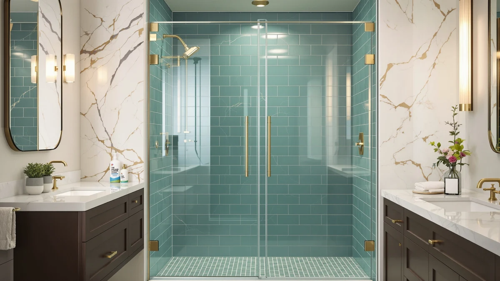

Best Cleaner for Glass Shower Doors with Hard Water Stains (2026)


Quick Answer
The best cleaner for glass shower doors with hard water stains is the Rain-X 630544 X-Treme Clean Shower, because it strips existing calcium and lime deposits without a scrub brush. If your stains have already started etching into the glass, the Brite & Clean Ultimate Hard Water Stain Remover and the UNGER Commercial RubOut tackle buildup that a lighter spray tends to leave behind.
Our pick: Rain-X 630544 X-Treme Clean Shower, $16.00 Check Price on Amazon
Bottom line: our top pick is the Rain-X 630544 X-Treme Clean Shower Door Cleaner at $20.89. The best budget option is the Rain-X 630035 X-Treme Clean Shower Door Cleaner at $9.97.
Things to Know Before You Buy
- A cleaner and a repellent solve different problems. Six of these seven products strip hard water stains that already exist; the Rain-X 630542 Water Repellent instead keeps new spots from forming once your glass is clear.
- Price ranges widely for a similar job. The best cleaner for glass shower doors with hard water stains costs as little as $9.97 (Rain-X 630035) and as much as $29.95 (GlasWeld ProClean), and the pricier bottles don't always work faster.
- Severity of staining changes which product fits. Light, regular spotting responds to a quick spray like the Rain-X formulas, while stains that have etched into the glass need a dedicated paste or applicator-pad formula like Brite & Clean or GlasWeld.
- Format varies between sprays and pastes. Uncle Todd's ships as a mint-scented paste rather than a liquid spray, which changes how you apply and rinse it compared with the other six products.
- Not every formula is acid-based. GlasWeld ProClean specifically markets itself as non-acid, which matters if you're cleaning near other bathroom fixtures in the same session.
The best cleaner for glass shower doors with hard water stains is the Rain-X 630544 X-Treme Clean Shower, a no-scrub spray built to break down calcium, lime, and rust deposits without hours of scrubbing. At $16.00 for a two-bottle pack, it costs less than almost every other option in this comparison, and owners report it cuts through existing spots in seconds rather than minutes. We paired it with six other cleaners and one water repellent, so you have options whether your glass has light daily spotting or stains that have sat for months.
Hard water stains on shower glass come from the same source no matter which brand you buy: evaporating water leaves behind calcium, lime, and sometimes rust that bonds to the surface the longer it sits. A fresh spot wipes away with almost any spray, but buildup that has sat for weeks hardens into a film that needs a thicker paste or a dedicated stain remover to break down. That difference in severity is why this comparison includes both light sprays and heavier-duty pastes, rather than seven nearly identical bottles.
These seven products range from $9.97 to $29.95, and six of them remove existing stains while one, the Rain-X 630542 Water Repellent, is a preventive treatment meant to run after you've already cleaned the glass. Below, we break down what each product does well, where it falls short, and which one matches the kind of hard water stains you're dealing with, starting with honest pros and cons for every pick.
Why You Should Trust Us
Ilane Tall covers home and bath products for Best Shower Doors and has spent years comparing glass cleaners, bathroom hardware, and installation guides for US homeowners. We do not run a fake testing lab, and we do not claim to have scrubbed every shower door in this roundup ourselves. Instead, we research manufacturer formulas, track verified owner feedback across hundreds of reviews, and cross-check pricing and sizing before recommending the best cleaner for glass shower doors with hard water stains or any alternative in this comparison. When a listing does not specify a detail like whether a formula is acid-based, we say so directly rather than guess.
How We Picked
We started by separating the six cleaners that remove existing hard water stains from the single product built to prevent new ones, the Rain-X 630542 Water Repellent. That split is why one repellent sits alongside six stain removers in this guide to the best cleaner for glass shower doors with hard water stains, instead of seven identical sprays. From there, we filtered candidates by three criteria: a clearly stated formula or active ingredient rather than a vague "cleaning power" claim, transparent pricing with no hidden shipping fees, and a pattern of verified customer reviews rather than a handful of unverifiable five-star ratings. We excluded products that did not disclose whether their formula was acid-based, since that detail changes how safe a cleaner is to use near other bathroom surfaces.
How We Compared
We compared these seven products on the factors that matter most for finding the best cleaner for glass shower doors with hard water stains: formula type, including whether it is acid-based or a paste versus a spray, price relative to bottle size, and what verified owners report about how much scrubbing each product actually requires. Manufacturers rarely publish independent lab data on how fast a formula dissolves calcium and lime deposits, so we leaned on patterns across many verified reviews for each product, looking for repeated mentions of no-scrub results or stubborn leftover residue rather than a single complaint. We also weighed each cleaner against its price per ounce, since a bottle that costs twice as much but does the same job isn't automatically the better buy because of its label.
Our Picks

Rain-X 630544 X-Treme Clean Shower
What we like
- Two bottles for $16.00 make it one of the cheapest options per ounce in this comparison
- According to verified reviews, it cuts through calcium and lime spots without heavy scrubbing
Flaws but not dealbreakers
- The formula targets existing stains and does nothing to prevent new ones from forming
- A 12 ounce bottle runs out faster than the 16 ounce options from Uncle Todd's or UNGER
| Material | — |
| Size | 12 Fl Oz (Pack of 2) |
The Rain-X 630544 X-Treme Clean Shower is the cleaner we'd reach for first in this comparison, and it is also the one behind the quick answer at the top of this guide. It targets soap scum, dirt, and hard water buildup directly, breaking down calcium, lime, and rust stains with a formula the brand designed specifically for glass shower doors rather than general bathroom surfaces.
Per ounce, the $16.00 two-bottle pack beats five of the other six products here, and reviewers consistently note that stains lift within seconds instead of requiring a scrub brush. The tradeoff is that it only removes stains that already exist. If you want to keep new spots from forming after you clean, pair it with the Rain-X 630542 Water Repellent below.

Rain-X 630035 X-Treme Clean Shower
What we like
- At $9.97, it's the least expensive product in this entire comparison
- Uses the same calcium, lime, and rust-fighting formula as the 630544 two-pack
Flaws but not dealbreakers
- One bottle runs out roughly twice as fast as the two-pack version
- Per ounce, it costs slightly more than buying the 630544 two-pack upfront
| Material | — |
| Size | 12 Fl Oz (Pack of 1) |
The Rain-X 630035 X-Treme Clean Shower uses the same cleaning formula as the 630544 above, built to clean glass shower doors by removing soap scum, dirt, and hard water buildup. The difference is packaging: this version ships as a single 12 ounce bottle instead of a two-pack, which keeps the upfront price under $10.
That lower sticker price makes sense if you only have one shower door to treat or want to test the formula before buying more. Run the math over a year, though, and the two-pack 630544 works out slightly cheaper per ounce, so this bottle is about minimizing what you pay today rather than optimizing long-term value.

Rain-X 630542 Shower Door Water
What we like
- Backed by a brand with over 50 years making water-repellent formulas
- Regular use keeps hard water, soap scum, and grime from building back up for weeks at a time
Flaws but not dealbreakers
- It will not remove stains that already exist, so it only works after a cleaner like the 630544
- At $19.46 for two 16 ounce bottles, it costs more upfront than any single stain remover here
| Material | — |
| Size | 16 Fl Oz. (Pack of 2) |
The Rain-X 630542 Shower Door Water Repellent is the one product in this comparison that isn't a stain remover. Instead of breaking down existing calcium or lime deposits, it coats the glass so water beads up and slides off before it can dry into a visible spot, using the same bead-and-slide technology the brand built its windshield treatments on.
It's a second step rather than a replacement for a cleaner. Apply it to glass that is already free of hard water stains, and reviewers report it keeps the door looking clean for weeks between deep cleans. Skip straight to this repellent on stained glass, though, and you're coating the problem instead of solving it.

Hard Water Stain Remover &
What we like
- A 16 ounce bottle covers glass, porcelain, chrome, and stainless steel surfaces beyond the shower door itself
- Formulated and packaged in the USA, according to the brand
Flaws but not dealbreakers
- The paste format means more rubbing per application than a spray-and-wipe cleaner
- The mint scent is noticeable, which may bother anyone sensitive to strong fragrances
| Material | — |
| Size | 16 Fl Oz (Pack of 1) |
Uncle Todd's Hard Water Stain Remover ships as a mint-scented paste rather than a spray, which sets it apart from the other six products in this comparison. The thicker texture is built to break down calcium, lime, and rust deposits on shower glass, and the brand markets it as a one-bottle replacement for the separate tile, tub, and chrome cleaners many people keep under the sink.
At $15.99 for 16 ounces, it costs less per ounce than the Brite & Clean, GlasWeld, and UNGER options below, and you can use the same bottle on porcelain and stainless steel fixtures elsewhere in the bathroom. The paste does ask for more manual rubbing than a quick spray, so it suits buyers who don't mind spending a few extra minutes for a product that handles more than one surface.

Brite & Clean® (Bright &
What we like
- Includes specific instructions, including a QR code, for restoring surfaces with stubborn etching or corrosion
- Biodegradable formula that the brand says produces no harsh fumes
Flaws but not dealbreakers
- At 6 ounces, it's the smallest bottle in this comparison relative to its $16.95 price
- Persistent stains require extra scrubbing pressure in a smaller area, according to the brand's own instructions
| Material | — |
| Size | 6 Ounce (Pack of 1) |
Brite & Clean markets its Ultimate Hard Water Stain Remover specifically at glass, shower doors, and windows, along with granite, porcelain, tile, stainless steel, and chrome. The clearest difference from the Rain-X sprays is the detail built into the instructions for stubborn cases: the brand includes a QR code with extra steps for surfaces where mineral deposits have started etching rather than sitting on top of the glass alone.
This extra guidance suggests the formula is aimed at a tougher job than routine upkeep. At $16.95 for 6 ounces, it's priced closer to the GlasWeld and UNGER options than the Rain-X sprays, and the biodegradable formula means no strong fumes while you work. If a quick spray hasn't budged your stains, the documented restoration process here is the clearest reason to reach for this one over a lighter cleaner.

GlasWeld ProClean Hard Water Stain
What we like
- Non-acid formula, a plus for anyone cleaning near other bathroom fixtures in the same session
- Ships with an applicator pad, so you're not reaching for a separate cloth or sponge
Flaws but not dealbreakers
- At $29.95 for 8 ounces, it's the most expensive product per ounce in this comparison
- The brand markets it broadly across car windshields and boat windows, not shower glass specifically
| Material | — |
| Size | 8 Ounce (Pack of 1) |
GlasWeld ProClean positions itself as a professional-grade option that breaks down calcium buildup and lime scale without the acid found in some competing formulas. The included applicator pad is a detail none of the other six products in this comparison offer out of the box, useful if heavy, long-neglected buildup needs more direct contact than a spray bottle alone provides.
At $29.95 for 8 ounces, it's priced well above the Rain-X sprays and Uncle Todd's paste, and that price reflects a formula the brand also markets for car windshields and boat windows, beyond shower glass. If your shower door has gone months without cleaning and a cheaper spray has already failed, the non-acid formula and built-in applicator here are worth the premium.

UNGER Commercial RubOut Hard Water
What we like
- Designed for professional use, so the formula is built to restore clarity without abrasive scrubbing tools
- A 16 ounce bottle matches Uncle Todd's for the most product per bottle in this comparison
Flaws but not dealbreakers
- At $22.64, it costs more than every option here except the GlasWeld ProClean
- The commercial branding and packaging feel less consumer-friendly than the Rain-X or Brite & Clean bottles
| Material | — |
| Size | 16 Fl Oz (Pack of 1) |
UNGER built its RubOut Hard Water Stain Remover for the commercial cleaning trade, which shows in both the ready-to-use formula and the no-nonsense 16 ounce bottle. The brand markets it as safe for glass without scratching the surface, aiming it at the same hard water marks, mineral residue, and rust stains the consumer-facing products in this comparison target.
The $22.64 price lands it in the upper half of this lineup, second only to the GlasWeld ProClean. What you get for that price is a formula built around professional results without needing abrasive tools, which suits buyers who want a no-frills, ready-to-use option over a bottle designed with a retail shelf in mind.
Quick Comparison
| Product | Material | Price | Rating | Best for | Get it |
|---|---|---|---|---|---|
| Rain-X 630544 X-Treme Clean Shower | — | $16.00 | 4 | Everyday hard water spotting at the lowest price per ounce | View on Amazon → |
| Rain-X 630035 X-Treme Clean Shower | — | $9.97 | 4 | Lowest upfront price to try the Rain-X formula | View on Amazon → |
| Rain-X 630542 Shower Door Water | — | $19.46 | 4 | Preventing new stains after the glass is already clean | View on Amazon → |
| Hard Water Stain Remover & | — | $15.99 | 4 | One paste that cleans glass, tile, and chrome | View on Amazon → |
| Brite & Clean® (Bright & | — | $16.95 | 4 | Stubborn or etched stains that need a documented restoration process | View on Amazon → |
| GlasWeld ProClean Hard Water Stain | — | $29.95 | 4 | Non-acid formula with an included applicator pad for heavy buildup | View on Amazon → |
| UNGER Commercial RubOut Hard Water | — | $22.64 | 4 | Professional-grade formula without abrasive tools | View on Amazon → |
The Competition
We looked at more products than these seven before settling on this comparison for the best cleaner for glass shower doors with hard water stains. Plain white vinegar came up constantly in owner reviews as a home remedy, and it does cut through light mineral spotting, but it needs repeat applications and leaves a smell that bottled cleaners here don't, so we left it out of a comparison built around dedicated commercial products.
We also considered abrasive scouring powders, the kind marketed for countertops and sinks. They can scrub through heavy buildup fast, but owner reviews of similar powders warn that the grit scratches glass over repeated use, trading a short-term fix for permanent surface damage, which ruled them out for a guide specifically about glass.
Finally, we skipped generic all-purpose glass cleaners that don't call out hard water or calcium removal specifically. They handle fingerprints and light dust well, but they aren't formulated to break down the mineral deposits this guide is built around, so they fall outside the scope of the best cleaner for glass shower doors with hard water stains. Among the seven products we did include, the Rain-X 630544 remains our pick for most bathrooms, while the other six cover stronger buildup, multi-surface cleaning, and prevention.
Frequently Asked Questions
What is the best cleaner for glass shower doors with hard water stains?
For most households, the Rain-X 630544 X-Treme Clean Shower is the best cleaner for glass shower doors with hard water stains, because it removes calcium, lime, and rust buildup without heavy scrubbing at one of the lowest prices in this comparison. If your glass has already started etching, the Brite & Clean Ultimate Hard Water Stain Remover includes a documented process for more stubborn buildup.
Can I use a hard water stain remover on other bathroom surfaces?
Several products in this comparison are built for more than shower glass. Uncle Todd's paste is marketed for tile, tubs, chrome, and stainless steel, and Brite & Clean lists granite and porcelain alongside glass, so you can treat more than one surface with the same bottle depending on which one you choose.
Should I clean hard water stains or use a water repellent instead?
Clean first, then repel. The Rain-X 630542 Water Repellent only prevents new spots from forming on glass that is already free of stains, and it does not remove deposits that already exist. Use one of the six stain removers in this comparison first, then apply the repellent to keep new buildup from coming back.